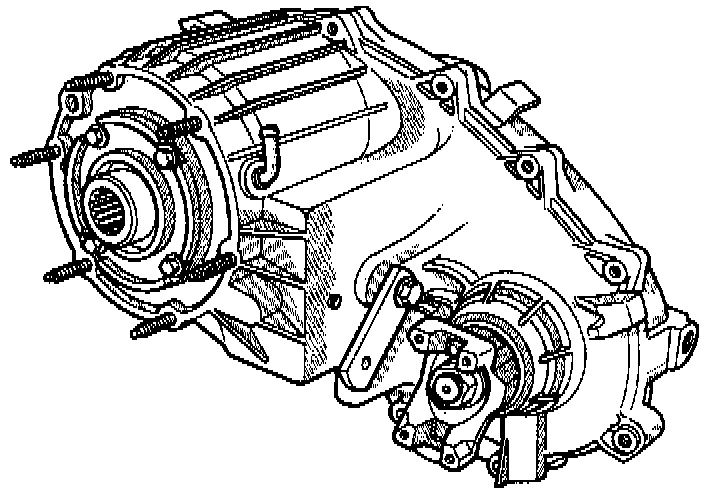
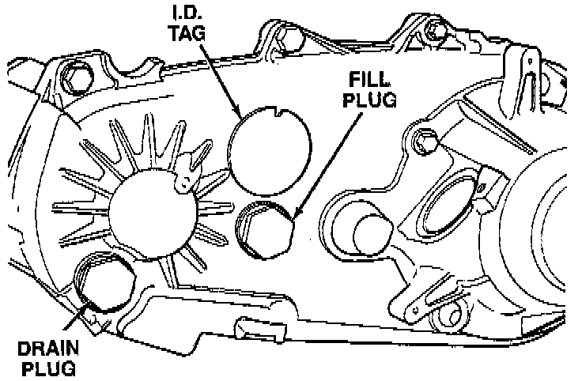

With NV242 Transfer Case

GENERAL INFORMATION
The NV242 is a full and part-time transfer case. It provides full time 2-wheel, or 4-wheel drive operation.
A differential in the transfer case is used to control torque transfer to the front and rear axles. A low range gear provides increased low speed torque capability for off road operation. The low range provides a 2.72:1 reduction ratio.
The input gear is splined to the transmission output shaft. It drives the mainshaft through the planetary gear and range hub. The front output shaft is operated by a drive chain that connects the shaft to a drive sprocket on the mainshaft. The drive sprocket is engaged/disengaged by the mode fork, which operates the mode sleeve and hub. The sleeve and hub are not equipped with a synchro mechanism for shifting.
The gear-train is mounted in two aluminum case halves attached with bolts. The mainshaft front and rear bearings are mounted in aluminum retainer housings bolted to the case halves.
OPERATING RANGES
NV242 operating ranges are 2WD (2-wheel drive), 4x4 part-time, 4x4 full time, and 4 Lo.
The 2WD and 4x4 full time ranges can be used at any time and on any road surface.
The 4x4 part-time and 4 Lo ranges are for off road use only. The only time these ranges can be used on hard surface roads, is when the surface is covered with snow and ice.
SHIFT MECHANISM
Operating ranges are selected with a floor mounted shift lever. The shift lever is connected to the transfer case range lever by an adjustable linkage rod. A straight line shift pattern is used. Range positions are marked on the shifter bezel cover plate, or on the shift knob.

TRANSFER CASE IDENTIFICATION
A circular ID tag is attached to the rear case of each transfer case. The ID tag provides the transfer case model number, assembly number, serial number, and low range ratio.
The transfer case serial number also represents the date of build.
RECOMMENDED LUBRICANT AND FILL LEVEL
Recommended lubricant for the NV242 transfer case is MOPAR Dexron II, or ATF Plus. Approximate lubricant fill capacity is 1.35 liters (2.85 pints).
The fill and drain plugs are both in the rear case. Correct fill level is to the bottom edge of the fill plug hole. Be sure the vehicle is level to ensure an accurate fluid level check.